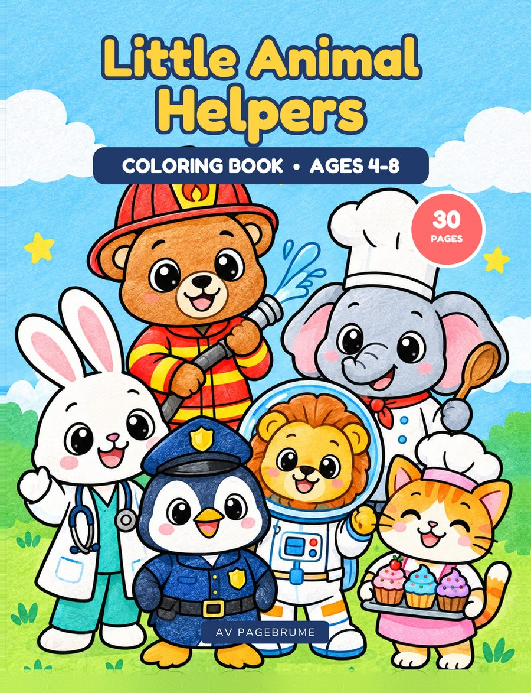

Coloring book
Little Animal Helpers: Coloring Book for Kids Ages 4-8
Little Animal Helpers is a coloring book for kids ages 4-8. Inside, animal characters do community-helper jobs, including a firefighter bear, a chef elephant, and an astronaut lion.
The cover also shows a rabbit in medical scrubs, a penguin police officer, and a cat holding cupcakes. It is marked as a 30-page book.
It is for parents, grandparents, pre-K and kindergarten teachers, and homeschoolers.
Questions
What ages is Little Animal Helpers for?
Little Animal Helpers is a coloring book for kids ages 4-8. It is for parents, grandparents, pre-K and kindergarten teachers, and homeschoolers.
What is inside the book?
It is a 30-page coloring book of animal characters doing community-helper jobs. The characters include a firefighter bear, a chef elephant, and an astronaut lion.
Can this book be used in a classroom?
Yes. It is made for pre-K and kindergarten teachers and homeschoolers, as well as families. Free sample pages from the book are available for personal and classroom use.
Where can I find the paperback and hardcover?
The paperback on Amazon (opens in a new tab) and the hardcover on Amazon (opens in a new tab) are both linked from this page.